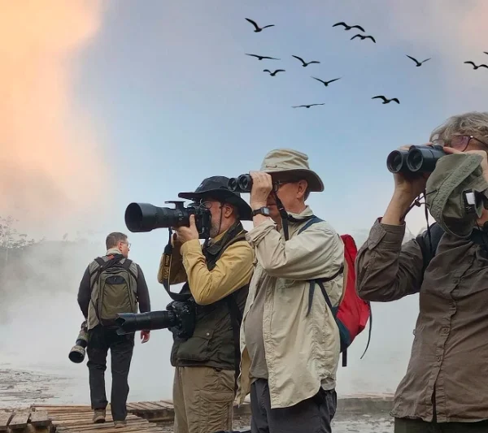
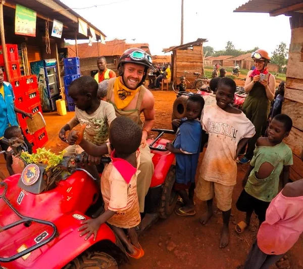
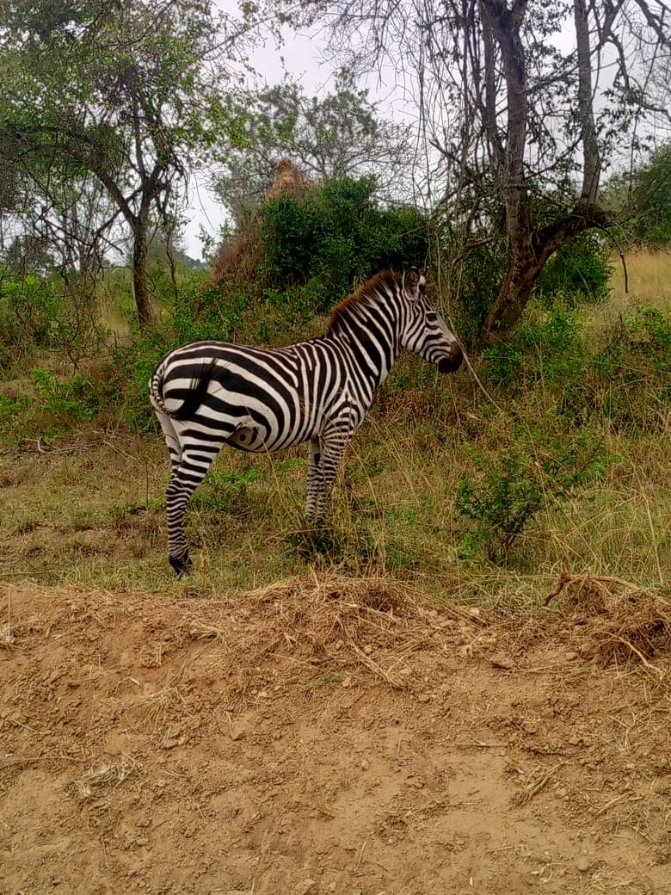

Gorilla Trekking
Bwindi, Mgahinga, permits, lodges, and transport support.
Destinations & Experiences
Explore primate forests, classic savannah parks, mountain trails, rhino tracking, and cross-border Rwanda journeys.
Things to Do
Bwindi, Mgahinga, permits, lodges, and transport support.

Kibale and primate routes that combine well with western Uganda safaris.

Murchison Falls, Queen Elizabeth, Lake Mburo, and Kidepo itineraries.

Shoebill, forest birds, lake routes, and quiet nature walks.

Kazinga Channel, Nile cruises, and scenic lake add-ons.

City, village, heritage, food, craft, and guided community experiences.
Destination Ideas
Expanded Destination Guide
Every activity is planned around current park rules, permit availability, season, travel time, and the pace of your group.
Start early with UWA guides and follow a semi-habituated chimpanzee community through the forest. Current guidance allows up to four hours of viewing after the chimpanzees are located. Advance permits are essential, and the experience pairs naturally with Bigodi, crater lakes, Queen Elizabeth, or a longer western Uganda circuit.
Plan Kibale
Murchison Falls National Park is one of Uganda's most rewarding safari destinations, combining powerful Nile scenery with excellent wildlife viewing. Travelers can enjoy game drives, boat cruises, bird watching, waterfalls, and sightings of giraffes, elephants, hartebeests, patas monkeys, buffaloes, antelopes, and many other species. The park is ideal for photography, family safaris, group tours, and travelers who want a classic Uganda wildlife experience.
Plan Murchison
Queen Elizabeth National Park offers a rich mix of wildlife, crater landscapes, salt pans, scenic views, and boat experiences along the Kazinga Channel. Visitors can see elephant herds, hippos, buffaloes, antelopes, birdlife, and sometimes tree-climbing lions in Ishasha. The park is also a good choice for travelers who want both wildlife and beautiful western Uganda landscapes.
Plan Queen Elizabeth
Uganda’s compact savannah park is ideal for zebra, impala, eland, acacia birdlife, boat safaris, guided walks, game drives, and—when arranged with a ranger—night drives. It works especially well as a short escape or a stop between Kampala and south-western Uganda.
Plan Lake Mburo
Choose from scenic foothill walks, multi-day treks, or a technical summit expedition. Augur can coordinate transport, guides, accommodation, and the wider western Uganda route.
Plan Rwenzori Photo: Itote Rubombora / Unsplash
Explore forest and mountain trails, waterfalls, caves, viewpoints, birdlife, and coffee experiences around Sipi. Routes can range from a relaxed day walk to a multi-day Mount Elgon trek.
Plan Mount Elgon
Ziwa Rhino Sanctuary offers guided rhino tracking and conservation learning. It is a perfect stopover for travelers going from Kampala or Entebbe to Murchison Falls National Park. Visitors get a chance to see rhinos safely with trained guides while learning about Uganda's rhino conservation story.
Plan Ziwa
Use Augur's Rwanda service route to connect Kigali, Volcanoes National Park, Akagera's Big Five and Lake Ihema boat trips, Nyungwe primates, and Lake Kivu boat experiences. Lake Kivu is a peaceful Rwanda destination, ideal for scenic boat journeys, relaxation, photography, and lakeside experiences after Kigali city tours, gorilla trekking, Nyungwe forest visits, or Uganda-Rwanda safaris.
Explore Rwanda toursPark rules, permits, activity times, and availability can change. Augur confirms the latest requirements with the relevant wildlife authority before final booking.
Travel Styles
Bwindi, Mgahinga, Kibale, permits, lodges, guides, and transport.
Compare tripsMurchison Falls, Queen Elizabeth, Lake Mburo, Nile, and Kazinga cruises.
Open wild tours
Airport pickups, staff movement, conference vehicles, and scheduled hires.
Request fleet
Jinja, Mabamba, Lake Mburo, city tours, transfers, and weekend-friendly plans.
See options